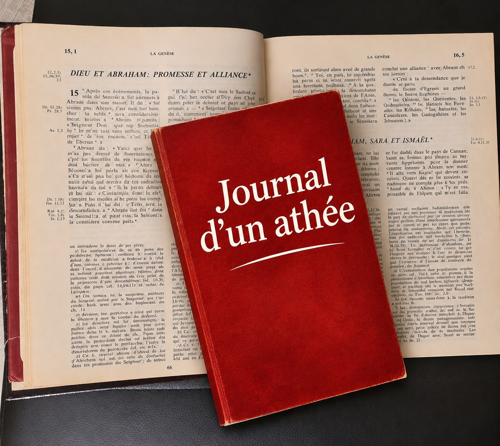

Réflexions
Des questions à habiter. Des symboles à traverser. Des chemins à poursuivre, sans prétendre en fixer le terme.
Un livre ne referme pas une pensée. Il lui donne parfois un point de départ.
Cette page rassemble des réflexions autour de l’altérité, du symbole et de l’expérience intérieure. Elles ne proposent ni itinéraire obligatoire ni vérité définitive : seulement des invitations à déplacer le regard.
L’Autre, cette terre sacrée
Je ne peux avoir conscience de moi sans l’Autre. Pourtant, il demeure en lui une part qui m’échappe. Du buisson ardent à la fenêtre de Johari, une réflexion sur le regard, la limite, la vulnérabilité et la responsabilité.
Lire la réflexion sur l’altéritéPeut-on lire la Bible sans croire en Dieu ?

Nous pouvons lire Prométhée sans croire en Zeus. Pourquoi faudrait-il croire en Dieu pour explorer Adam, Ève ou Jacob ? Une invitation à lire les récits bibliques comme des mythes vivants, avec la liberté de questionner et la responsabilité de rester fidèle au texte.
Lire la Bible sans croire en Dieu